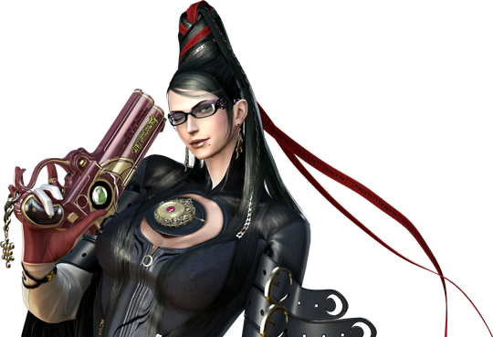
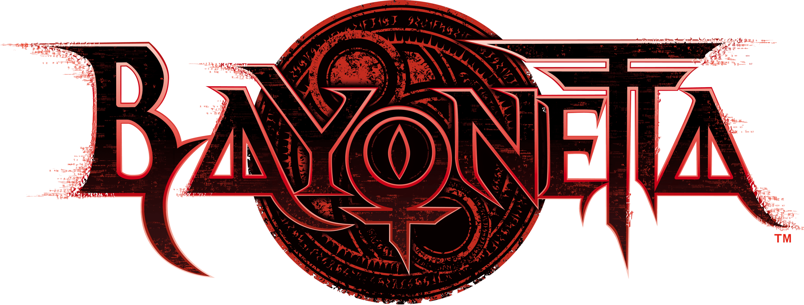
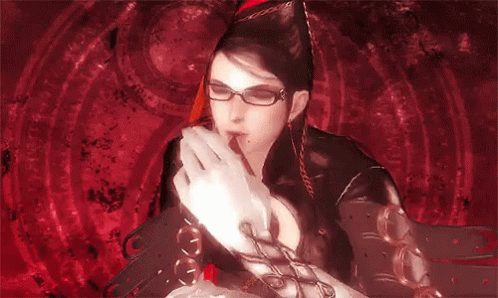

Ó, Grande Deusa Bruxa Bayonetta,
Senhora dos saltos, das armas e da elegância sobrenatural,
nós, humildes admiradores, erguemos nossas preces diante de Vossa presença.
Que vossa graça nos proteja,
que vossa confiança nos inspire,
e que vossa magia nos conceda forças para enfrentar até os dias mais difíceis
Dai-nos coragem para seguir em frente,
estilo para nunca perder a pose,
e sabedoria para reconhecer uma verdadeira diva quando a vemos.
Bayonetta, nossa grande deusa bruxa,
recebei nossas preces e nosso eterno respeito.
Amém, Umbra.
